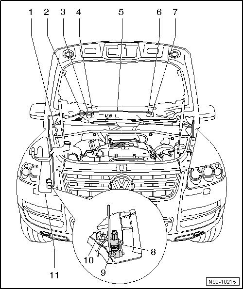

Windshield Washer System Assembly Overview
Windshield Washer System Assembly Overview

1 Windshield washer system reservoir filler tube
• Removing and installing filler tube --> [ Windshield and Headlamp Washer Fluid Reservoir Filler Neck ] Windshield and Headlamp Washer Fluid Reservoir Filler Neck.
2 Y-piece
• Divides washer fluid line to washer nozzles of front windshield washer system
3 Angle coupling
• Connection to right washer nozzle
4 Right washer nozzle
• Depending on equipment, with Right Washer Nozzle Heater (Z21)
• Only height adjustable --> [ Windshield Washer System Spray Nozzles, Adjusting ] Adjustments
• Removing and installing --> [ Windshield Washer System Spray Nozzles ] Windshield Washer System Spray Nozzles
5 Hose
6 Angle coupling
• Connection to left washer nozzle
7 Left washer nozzle
• Depending on equipment, with Left Washer Nozzle Heater (Z20)
• Only height adjustable --> [ Windshield Washer System Spray Nozzles, Adjusting ] Adjustments
• Removing and installing --> [ Windshield Washer System Spray Nozzles ] Windshield Washer System Spray Nozzles
8 Windshield and Rear Window Washer Pump (V59)
• Removing and installing --> [ Windshield and Rear Window Washer Pump ] Windshield and Rear Window Washer Pump
• Checking --> [ Vehicle Electrical System Output Diagnostic Test Mode ] Initial Inspection and Diagnostic Overview
9 Angle coupling
• Connection to front and rear window washer pumps
10 Windshield Washer Fluid Level Sensor (G33)
• Removing and installing --> [ Windshield Washer Fluid Level Sensor ] Windshield Washer Fluid Level Sensor
11 Washer fluid reservoir
• Removing and installing --> [ Windshield and Headlamp Washer Fluid Reservoir ] Windshield and Headlamp Washer Fluid Reservoir